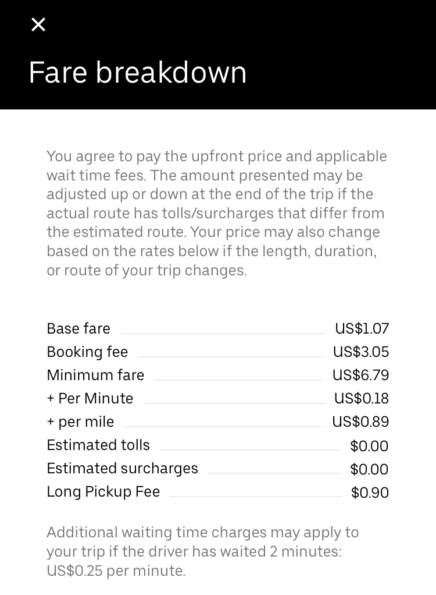

Participating as a driver in ridesharing companies (Uber and Lyft being the most common, but this article will only examine Uber) is a popular way of creating immediate side income: simply drive for a customer and money goes straight into your bank. But what deferred costs are lurking beneath the surface? (Note that the calculations here are based on limited data, making them extremely rough.)
First, a bit of background for those unfamiliar with ridesharing. The rider enters his information into the Uber app: who he is and where he's going. Nearby drivers get an alert and accept it after looking at both the destination and rider's rating. Once accepted the driver picks them up (the rider begins to get charged if the driver is waiting for more than 2 minutes) and "starts" the ride. Uber uses Google Maps to ensure the ride is as short as possible and to avoid possible hazards (accidents, traffic, etc). Once the rider is there, the driver "ends" the ride. The rider then rates the driver from 1-5 stars and leaves a gratuity if they so desire.
Fares can be a bit complicated, but are composed of four main aspects: the base fare, cost per minute, cost per mile, and booking fee. Estimated tolls, surcharges, and a "long pickup fee" may also apply.
Drivers take home the first three cost fields: base fare, cost per mile, and cost per minute. The ride above is 5.9 miles away and takes 15 minutes using Google maps. The driver's take-home pay is then:
\[\text{pay} = $1.07 \, \text{(base)} + 0.18 \, \frac{$}{\text{min}} \times 15 \, \text{min} + 0.89 \, \frac{$}{\text{mi}}\times 5.9 \, \text{mi} = $9.02\]When there are not enough Ubers for the total number of requests in an area, surge pricing comes into effect. Surge pricing multiplies the base fare by some factor to encourage more drivers to get on the app. Surge times are generally on weekend evenings and very early mornings.
There are different classes of Uber vehicles, in order of increasing price: X (basic car), Comfort (more legroom), XL (for groups), and Premier (nice cars with quality drivers).
It is also important to note that Uber drivers are not employees, but independent contractors. This gives Uber the freedom to not offer overtime and other benefits that true employees enjoy.
The only source that was found was from SherpaShare, who collaborated with Rideshare Dashboard. For some reason, two separate datasets were taken: one from Jan-Mar 2015 and one from Oct-Dec 2015. There's no comment on why the samples are discontinuous. Note this data is 5 years old at time of writing.
Their analysis of 10 large cities found a grand average of 6.0 miles per Uber trip:
| City | Grand Average Distance (mi) |
|---|---|
| Austin | 5.5 |
| Boston | 4.2 |
| Chicago | 5.0 |
| Dallas | 7.8 |
| Washington, D.C. | 5.0 |
| Los Angeles | 6.5 |
| Orange County | 7.2 |
| Phoenix | 7.5 |
| San Diego | 6.7 |
| San Francisco | 5.3 |
The only source that was found was from SherpaShare, who collaborated with Rideshare Dashboard. For some reason, two separate datasets were taken: one from Jan-Mar 2015 and one from Oct-Dec 2015. There's no comment on why the samples are discontinuous. Note this data is 5 years old at time of writing.
Their analysis of 10 large cities found a grand average of 25 minutes per Uber trip:
| City | Grand Average Time (min) |
|---|---|
| Austin | 26.0 |
| Boston | 18.5 |
| Chicago | 20.7 |
| Dallas | 30.6 |
| Washington, D.C. | 20.9 |
| Los Angeles | 24.4 |
| Orange County | 29.6 |
| Phoenix | 31.8 |
| San Diego | 30.2 |
| San Francisco | 22.0 |
Using a very gross calculation, the number of drivers in 2019 was 3.9 million and the total number of trips was 6.2 billion, giving an average of 1600 trips per driver in 2019, or just over 4 trips per day.
From Ridester's 2020 independent driver earnings survey (no 2019 survey was performed), the average Uber driver made $18.97 per hour in 2020, compared to $14.73 per hour in 2018, so a bit higher than the inflation rate. Assuming a linear rate of increase, the 2019 hourly wage would be $16.85 (this is done to keep the year consistent with the average trips per driver year).
Using these averages, a clear picture of a year in the life of a driver can be made.
The average driver made:
\[\text{average total} = 16.85 \, \frac{$}{\text{hr}} \times \frac{25}{60} \, \frac{\text{hr}}{\text{trip}} \times 1600 \, \frac{\text{trip}}{\text{year}} \approx $11000/\text{year}\]However, this value is misleading. Some people choose to drive full-time, bringing their average working time to 40-50 hours per week. Others choose to do it on the side, making their total time much less, maybe only a few hours per week. Defining an "on-the-side" driver to work 5 hr/week and a "full-time" driver to work 40 hr/week, the totals for each are then:
\[\text{on-the-side total} = 16.85 \, \frac{$}{\text{hr}} \times 5 \frac{\text{hr}}{\text{week}} \times 50 \, \frac{\text{week}}{\text{year}} \approx $4500/\text{year}\] \[\text{full-time total} = 16.85 \, \frac{$}{\text{hr}} \times 40 \frac{\text{hr}}{\text{week}} \times 50 \, \frac{\text{week}}{\text{year}} \approx $34000/\text{year}\]This still doesn't provide the clearest picture, as some drivers work significantly more, others even less, etc.
What about time spent driving?
\[\text{on-the-side average time} = 5 \frac{\text{hr}}{\text{week}} \times 50 \, \frac{\text{week}}{\text{year}} = 250 \, \text{hr}\] \[\text{average time} = \frac{25}{60} \, \frac{\text{hr}}{\text{trip}} \times 1600 \, \text{trip} = 650 \, \text{hr}\] \[\text{full-time average time} = 40 \frac{\text{hr}}{\text{week}} \times 50 \, \frac{\text{week}}{\text{year}} = 2000 \, \text{hr}\]And miles driven?
\[\text{on-the-side distance} = 6.0 \, \frac{\text{mi}}{\text{trip}} \times \frac{60}{25} \, \frac{\text{trip}}{\text{hr}} \times 250 \, \frac{\text{hr}}{\text{year}} = 3600 \, \frac{\text{mi}}{\text{year}}\] \[\text{average distance} = 6.0 \, \frac{\text{mi}}{\text{trip}} \times 1600 \, \frac{\text{trip}}{\text{year}} = 9600 \, \frac{\text{mi}}{\text{year}}\] \[\text{full-time distance} = 6.0 \, \frac{\text{mi}}{\text{trip}} \times \frac{60}{25} \, \frac{\text{trip}}{\text{hr}} \times 2000 \, \frac{\text{hr}}{\text{year}} = 29000 \, \frac{\text{mi}}{\text{year}}\]| Driver Type | Money/year ($/year) | Time/year (hr/year) | Miles/year (mi/year) |
|---|---|---|---|
| On-the-side | 4,500 | 250 | 3,600 |
| Average | 11,000 | 650 | 9,600 |
| Full-time | 34,000 | 2,000 | 29,000 |
With all of this information, a clearer picture of the deferred costs and tradeoffs can be realized.
The average cost to own a vehicle is $9,282/year, according to AAA's annual Your Driving Costs analysis. However, some of the factors that contribute to that sum (most of insurance, financing) would still be there without driving for Uber, so those won't be considered. Only factors that are increased because of Uber will be considered, those being:
The average American drives 13,500 miles per year (as of 2018). The average vehicle (only looking at cars and light trucks/vans) has a fuel economy of 20.9 mpg. The average price of a gallon of regular grade gasoline over the past year is $2.68/gallon. The total amount of money spent on fuel is then:
\[\text{average fuel cost/year} = 13500 \, \frac{\text{mi}}{\text{year}} \times \frac{1}{20.9} \, \frac{\text{gal}}{\text{mi}} \times 2.68 \, \frac{$}{\text{gal}} \approx $1700/\text{year}\] \[\text{fuel cost}_{\text{ots}} = 3600 \, \frac{\text{mi}}{\text{year}} \times \frac{1}{20.9} \, \frac{\text{gal}}{\text{mi}} \times 2.68 \, \frac{$}{\text{gal}} \approx $500/\text{year}\] \[\text{fuel cost}_{\text{avg}} = 9600 \, \frac{\text{mi}}{\text{year}} \times \frac{1}{20.9} \, \frac{\text{gal}}{\text{mi}} \times 2.68 \, \frac{$}{\text{gal}} \approx $1200/\text{year}\]Because on-the-side and average drivers still work a full-time job and their commute doesn't change at all due to Ubering, the $500 and $1200 per year is added on top of their normal $1700/year fuel expenses.
As the name implies for full-time drivers, this group does not have another job, so the commute mileage included in the 13500 can be subtracted. The average commute time is 26 minutes and, erring on the lower side of the speed limit, the typical speed of the commute is 30 mph, the average one-way commuting distance is 13 miles. Doing this twice a day for 50 weeks per year gives a yearly commuting distance of:
\[\text{commuting distance} = 26 \, \frac{\text{mi}}{\text{day}} \times 250 \, \frac{\text{day}}{\text{year}} = 6500 \, \frac{\text{mi}}{\text{year}}\]Total extra (solely due to Uber) fuel costs for a full-time driver can then be calculated by:
\[\text{fuel cost}_{\text{ft}} = (29000 - 6500) \, \frac{\text{mi}}{\text{year}} \times \frac{1}{20.9} \, \frac{\text{gal}}{\text{mi}} \times 2.68 \, \frac{$}{\text{gal}} \approx $2900/\text{year}\]Ridesharing insurance is required when working as a driver, since the personal policy does not cover "business" driving. The costs for each vary wildly by company, but can be approximated to be $15/month = $200/year.
The obvious frontrunner for deferred costs is maintenance. This includes oil changes, tire replacements, etc. YourMechanic has data detailing maintenance costs per 25k miles. Assuming the average driver is driving a used vehicle with mileage between 25,000-100,000, the average cost per 25k miles is $3,000, giving extra annual maintenance costs of:
\[\text{maint. cost per year}_{\text{ots}} = \frac{3000}{25000} \, \frac{$}{\text{mi}} \times 3600 \, \frac{\text{mi}}{\text{year}} = $450/\text{year}\] \[\text{maint. cost per year}_{\text{avg}} = \frac{3000}{25000} \, \frac{$}{\text{mi}} \times 9600 \, \frac{\text{mi}}{\text{year}} = $1200/\text{year}\] \[\text{maint. cost per year}_{\text{ft}} = \frac{3000}{25000} \, \frac{$}{\text{mi}} \times (29000-6500) \, \frac{\text{mi}}{\text{year}} = $2700/\text{year}\]These maintenance costs are highly dependent on the make of the vehicle. For example, a BMW's cost for the first 75k miles is around $13,500, while a Toyota's is a mere $4,300, over three times less!
This is a tricky subject and will not be analyzed. There is not much information or many studies about the chances of being involved in an accident, but they obviously increase with more time spent on the road. Further, the more time spent driving decreases the amount of focus on the road and surroundings, increasing the chances of an accident. (This is purely anecdotal, but myself, friends, and family members all agree.)
Risk-taking by drivers is controversial and will not be analyzed. For one, the driver may be more inclined to go faster to increase the amount of rides given per day. On the other hand, the rider may not like the danger associated with the faster driving, causing a gratuity or star (from the rating) to be taken away.
Total expenses because of Uber can be calculated by simply adding up all of the individual costs:
| Driver Type | Expenses/year ($/year) | Take-home pay/year ($/year) | Adjusted wage ($/hr) |
|---|---|---|---|
| On-the-side | 1,200 | 3,300 | 13.2 |
| Average | 2,600 | 8,400 | 12.9 |
| Full-time | 5,800 | 28,200 | 14.1 |
Surely there are some tradeoffs to driving for Uber.
The average wage (i.e., hourly pay, not salary) of an American is $28.33 (average of Feb-Apr 2019). Some industries pay much lower (leisure and hospitality at a mere $16.72 average), while others significantly higher (information at $42.76).
Regardless, it appears that every industry pays higher than what Uber will for full-time drivers. Even if they hustle at 50 hr/week for 52 weeks out of the year, their adjusted wage decreases down to $13.8/hr!
In addition to sheer wage increasing with another job, fuel, insurance, and maintenance costs will decrease significantly. (Of course, getting one of these positions is easier said than done, and not everyone is able to do so.)
Okay, so what about for the on-the-side or average driver?
Assuming both have an average job, they each make:
\[\text{take-home pay}_{\text{avg. job}} = 28.33 \, \frac{$}{\text{hr}} \times 2000 \, \frac{\text{hr}}{\text{year}} \approx $57000/\text{year}\]The typical raise is approximately 3-5% (not adjusted for inflation):
\[\text{raise} = (0.03 - 0.05) \times 57000 \, \frac{$}{\text{year}} \approx $1700-2900/\text{year} = $2300/\text{year (average)}\]An extra $2300/year just for being an employee (maybe more if you work hard)!
While many employers are hesitant to offer overtime, working just 5 hours of overtime per week gives significant advantages for both the on-the-side and average driver:
\[\text{overtime money}_{\text{5 hr/week}} = 1.5 \times 28.33 \, \frac{$}{\text{hr}} \times 250 \, \frac{\text{hr}}{\text{year}} = $10500/\text{year}\]The 5 hr/week overtime option takes no extra time for the on-the-side driver and 400 less hours for the average driver, but produces $7,200 and $2,100 more per year, respectively.
Driving often stresses people out. Sitting in traffic, being exposed to dangerous drivers and conditions, and interacting with passengers can create a stressful environment. While an Uber driver likely isn't one of those who gets stressed, there definitely are some, leading to the question: is it worth it? Is all that extra stress worth the measly $13/hr? Or would time be better spent elsewhere, e.g., relaxing after a long day of work?
This cannot be answered by analysis (okay, maybe it can, but that's outside the scope of this essay), as it's so subjective.
Most of this essay has had a negative tone towards driving for a ridesharing company. What about some of its positives and practical advice?
For one, it's a quick way to make cash that's not getting a payday loan or borrowing money from a friend. If you're short on money for something, simply hop in the car and start driving people around. In two hours you'll have made $25.
Most rideshare drivers have some awesome stories about riders they've gotten. Driving is a great way to meet some unique people and be a part of some fun experiences.
The main expense is the vehicle itself, especially with maintenance and fuel. Getting a fuel-efficient, reliable, low-cost vehicle is the best way to go. A Toyota Prius is the obvious leader: it costs around $2,800 for its first 75k miles, gets over 50 mpg, and starts at $24,000. These specs bring full-time driving expenses down to $2,200, as compared to $5,800 in an average vehicle. In contrast, a BMW 3 series costs around $11,000 for its first 75k miles, gets 26 city / 36 highway mpg, and starts at $40,000.
Driving during surge times is the best way to get the most money for time. Being an early riser and driving before work will net more money per time than driving during a non-peak hour.
Gratuities (tips) are another way to make "free" money. Being friendly, courteous, clean, and safe goes a long way towards making the trip a positive experience for the rider.
In general, you are better off only driving when you need the cash immediately.
On-the-side driving is arguably the best out of the three groups: the adjusted wage is the highest at $13.2/hr, the time commitment is small at 5 hr/week, and the wear-and-tear and depreciation on the vehicle is minimized.
Average driving is second best: on average, around $20/day is made for less than two hours of driving per day.
Full-time driving is likely the worst due to the opportunity cost: working an average job/career will pay over two times what driving for Uber does, but without the depreciation of the vehicle. And while Uber wages have been increasing steadily, they fail to keep up with the average raise in those jobs.